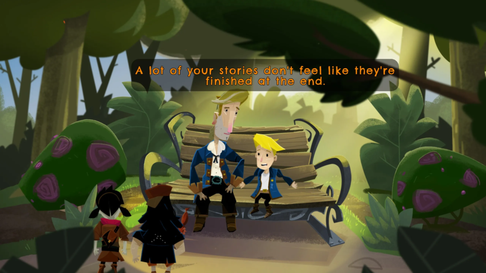
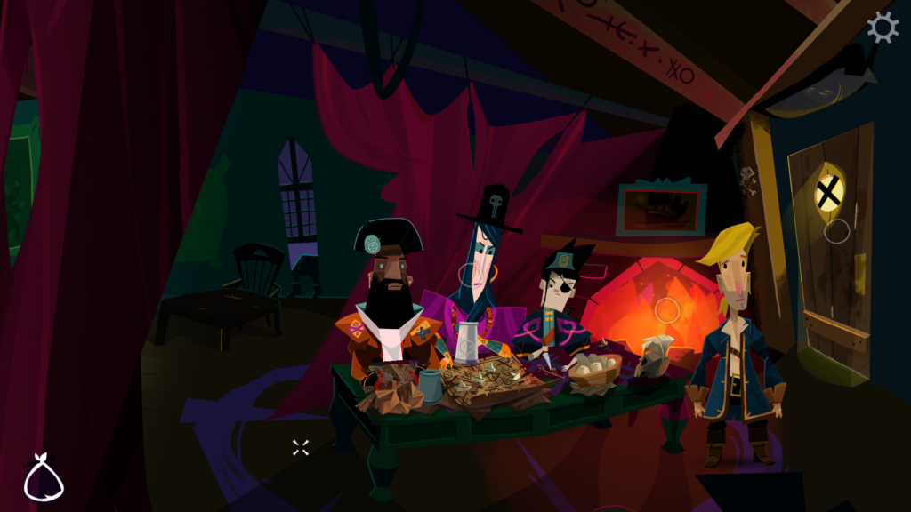
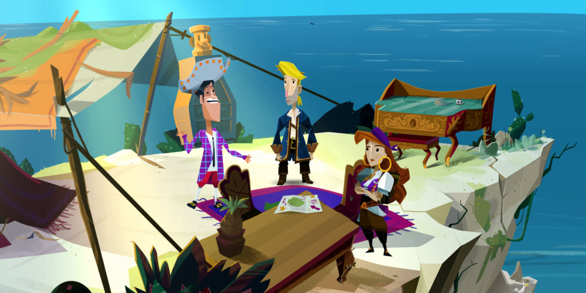
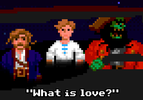

RETURN TO MONKEY ISLAND | REVIEW
Lo mejor de una gran aventura de ultramar es llegar a buen puerto.
El 19 de septiembre, el equipo de Ron Gilbert (Terrible Toybox)conjuntamente con Lucasfilm Games y Devolver Digital han entregado un maravilloso y oportuno regalo que gran parte de la comunidad esperaba: Return to Monkey Island, sexta y última entrega que da un cierre a la extensiva saga que dio popularidad al género de aventuras gráficas. La presente review fue realizada gracias a un código de prensa, gentileza de la publicadora.
Un poco de contexto
Monkey Island es una saga de juegos de aventura gráfica point-and-click que tiene sus inicios en los años ’90, siendo una de las más históricamente representativas del género. Cada entrega de esta aclamada serie nos relata las locas e hilarantes aventuras de Guybrush Threepwood, un aspirante a pirata que desea encontrar el Secreto de Monkey Island. El protagonista dependerá meramente de su astucia y lógica para hallar la forma de sobrepasar los obstáculos, derrotar sistemáticamente a su archienemigo El Pirata-Zombie LeChuck, quedarse con la chica, la gloria y los tesoros al final (bueno, esto último no tanto).
En Return to Monkey Island encontramos a Guy ya entrado en años y como padre de familia con su esposa Elaine. Se inicia el juego continuando el final tan misterioso del segundo título: La Venganza de LeChuck en un parque de diversiones encarnando a su pequeño hijo Boybrush, quien se encuentra justamente reimaginando con su amigo Chuckie la segunda gran victoria de su padre sobre su némesis. Acto seguido, luego de hallar a nuestro querido pirata, Boy le insiste a que le narre su última y gran aventura … Pero, ¿qué diablos es el secreto de Monkey Island?
Guybrush comienza su relato a partir de su última batalla con LeChuck, ya casado y de regreso a la isla Isla Mêlée, donde se encuentra con un escenario un poco cambiado: los jefes piratas fueron reemplazados, el viejo del almacén no está, hay comerciantes nuevos y la gobernadora es una gran vieja conocida que al veterano del Monkey lo sorprenderá. Como no, la ambición de nuestro valiente Threepwood no se ha apagado y retoma su eterna búsqueda del Secreto de MI.
Clickeá el mundo
Como todas las entregas anteriores se mantiene la modalidad point-and-click, donde se deberá interactuar con personajes, objetos y el entorno para poder ir avanzando en la trama. Lo curioso del gameplay es que el juego entero es en sí una continua resolución de puzzles debiendo combinar objetos y acciones con una lógica muy característica de la saga… llegando por momentos a “trabarse”. ¡Pero a no sufrir! Ya que los desarrolladores fueron buenos e intentaron implementar sistemas para que todo el mundo pudiera jugarlo sin hacerle practicar bungee jumping a su mouse.
El título consta con ciertas mecánicas nuevas que guían al jugador mediante sugerencias visuales y escritas el camino correcto, objetos o personajes que no han tomado en cuenta. Por un lado, con una tecla se puede activar un refuerzo visual en donde aparecen en pantalla indicadores de los objetos del escenario con los que se puede actualizar, por otro lado, se puede acceder dentro del inventario a una “to-do list” que hace un seguimiento de lo que se ha hecho o se tiene que hacer y, por último, un “Libro de pistas” al que el jugador puede abrir para acceder a ideas o indicaciones que ayudan a pensar para resolver la infinidad de puzzles que se nos presenta.
Se podría decir “Pero claro, así cualquiera” … pero nada más alejado de la realidad, dado que la cantidad de cosas que hay para interactuar es enorme y no todas son útiles. La resolución de los enigmas obliga al jugador a ir de acá para allá, probar, hablar, preguntar, recordar detalles o diálogos y sobre todo ser muy observador, dejando al criterio del que juega si necesita ayuda o no sin necesidad de acudir a internet o que le digan directamente la solución, convirtiendo al título en algo mucho mas que disfrutable y divertido. Casi todas las soluciones son por demás satisfactorias como hilarantes, haciendo escapar una risa o tal vez un pensamiento “No te lo puedo creer… ¿posta esto es así?”
El cambio mas relevante: El arte gráfico
Si bien a lo largo de la serie siempre se innovó y se reinventó el aspecto gráfico, este es el primero en intentar regresar a las bases. En este se optó por una estética 2D un poco cartoon ygeométrica, optando por animaciones no muy complejas, minimalistas y una paleta de colores fabulosa, brillante y colorida; si bien el resultado es muy atractivo a la vista, en ciertos momentos puede llegar a sugerir un aspecto muy simplón. Sin embargo, esto no rebaja en ningún momento la calidad del título, corriendo de forma suave y sin demasiados bugs, pudiendo disfrutar la aventura sin contratiempos.
En cuanto al aspecto auditivo, la música es fantástica. Claramente se intentó realizar una oda a las bandas sonoras de los primeros tres juegos, constando de un amplio repertorio de pistas que acompañan y realzan en todo momento las emociones que representan las situaciones, volviendo al juego en una delicia para los oídos. Esto se logró gracias a que la mayor parte de los productores musicales que acompañaron toda la saga estuvieron presentes como Michael Land y Peter McConnell, quienes comprenden a la perfección qué deben transmitir. Asimismo, es remarcable que todos los actores de voz originales fueron nuevamente convocados, lo cual hace que continuamente se regrese a esos años frescos y hermosos que fueron los ’90.
Como conclusión se puede llegar a que el juego fue realizado con cariño y nostalgia, con toda la atención de otorgarle un buen final a esta serie que tanto divirtió y representó para generaciones enteras que tal vez iniciaron su camino gamer con este título. Altamente recomendable.
